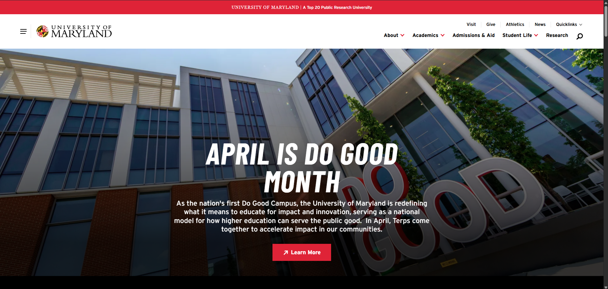

Website URL
UMD!Screenshot of Website

Target Audience
The target audience of the website is for current/prospecting students, alumnis, and parents to view information on various parts of UMD.
Site Organization
The website has a top navigation menu, clear categories, and large content sections which helps guides users to major areas such as admissions, financial aid, and general information about the university.
What "CRAP" Principle does this website use?
Contrast is utilized throughout the website's homepage through the school's red and white colors, and bold headings which helps make text stand out from the background.
Accessibility Score
The website 'accessibilitychecker.org' gave the UMD website a 95/100.
Effectiveness
The website is very effective in its goal of allowing users to get information that they may need easily, for example like viewing the different majors available at UMD.
Efficiency
The site is efficient as the navigation menu and quick links reduce the number of clicks that a user may need to do in order to find the information that they are looking for.
Engagement
The site is very engaging as there are many visuals shown about campus life, and the school spirit is effortlessly shown across the website making UMD look both enjoyable and professional.
Recommendation
One reccomendation I think would make the website even better could be a way to disable some site animations such as image transitions when scrolling onto a different area of the website. In my opinion it could be distracting for some users, and could also cause slow loading times depending on how strong the user's device/internet connection is. This could be implemented as a button.